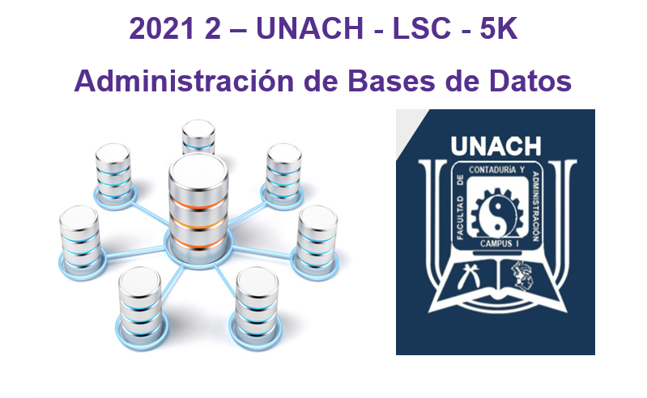

Mi página con Bootstrap
Bootstrap es un framework front-end utilizado para desarrollar aplicaciones web y sitios mobile first, o sea, con un layout que se adapta a la pantalla del dispositivo utilizado por el usuario.

| # | Nombre | Paterno | Materno |
|---|---|---|---|
| 1 | Luis | Ramos | Gómez |
| 2 | María | Castro | Lopéz |
| 3 | Carlos | Sánchez | Díaz |
Compiladores
Materia
En esta carrera vamos hablar acerca de un compilador que es un tipo de traductor que transforma un programa entero de un lenguaje de programación a otro. Usualmente el lenguaje objetivo es código máquina, aunque también puede ser traducido a un código intermedio o a texto.
LINK
Contabilidad
Materia
La contabilidad es una disciplina que se encarga de estudiar, medir y analizar el patrimonio y la situación económica financiera de una empresa u organización, con el fin de facilitar la toma de decisiones
LINKBase de Datos
Materia
Desde el punto de vista informático, la base de datos es un sistema formado por un conjunto de datos almacenados en discos que permiten el acceso directo a ellos y un conjunto de programas que manipulen ese conjunto de datos.
LINK